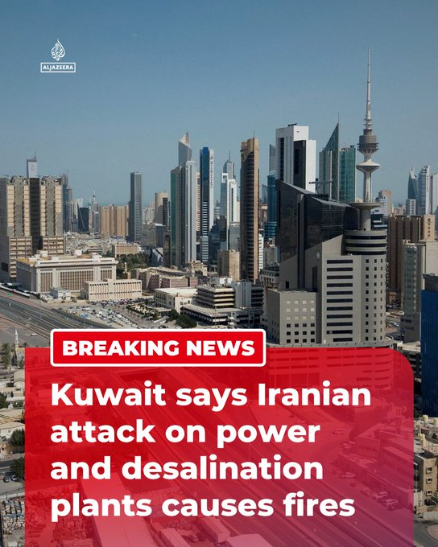

@AJENews
📝 原文: BREAKING: Kuwait’s Ministry of Electricity, Water and Renewable Energy has said an Iranian attack on power and water desalination plants has caused fires, with repair work ongoing, Reuters reports.More onhttp://Aljazeera.com
🇨🇳 译文: 突发新闻：据路透社报道，科威特电力、水利和可再生能源部表示，伊朗对电力和海水淡化厂的袭击已引发火灾，修复工作正在进行中。更多信息请访问 http://Aljazeera.com


🕒 2026-07-21T11:09:46+00:00